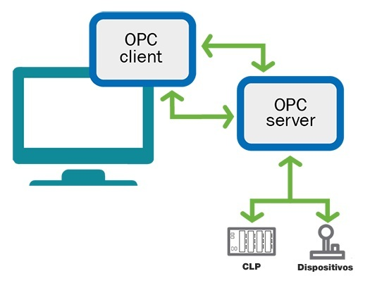
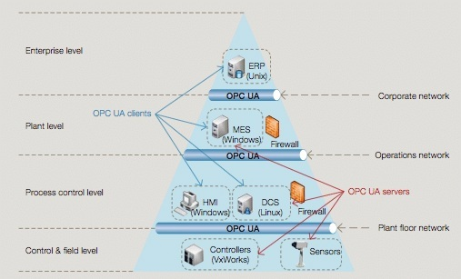

OPC UA (OPEN PLATFORM COMMUNICATIONS UNIFIED ARCHITECTURE)
ESTRUTURA FÍSICA E CABEAMENTO
OPC UA EM REDES DE AUTOMAÇÃO INDUSTRIAL
OPC UA é uma arquitetura de comunicação industrial independente de plataforma, desenvolvida para permitir a troca segura e interoperável de informações entre equipamentos, controladores, sistemas de supervisão e aplicações corporativas. Além de transportar dados, define modelos de informação que descrevem variáveis, objetos, estados, alarmes, eventos e relações entre elementos de um sistema.
O padrão suporta diferentes formas de comunicação. No modelo Cliente/Servidor, um cliente solicita serviços a um servidor; no modelo PubSub, publicadores enviam conjuntos de dados a assinantes por meio de mecanismos de distribuição. Essa flexibilidade permite utilizar OPC UA em diferentes níveis da automação, desde a integração entre controladores e supervisórios até a conexão com sistemas MES, ERP e plataformas IIoT.

MEIOS FÍSICOS E INFRAESTRUTURA DE COMUNICAÇÃO
OPC UA não determina um cabo industrial exclusivo. A camada física depende do mapeamento de transporte implementado. Uma configuração comum utiliza Ethernet sobre TCP/IP, normalmente com par trançado de cobre ou fibra óptica. Também existem mapeamentos de transporte para outras tecnologias, como HTTPS e, no modelo PubSub, UDP, MQTT e AMQP, conforme os perfis suportados pelos dispositivos.
- Ethernet de cobre: utilizada para conexões de PLCs, IHMs, servidores, gateways e switches em redes de automação e de supervisão.
- Fibra óptica: adequada para backbones, interligação entre prédios ou áreas com ruído eletromagnético elevado, desde que os equipamentos possuam interfaces ópticas compatíveis.
- Redes sem fio: podem transportar comunicação OPC UA sobre IP quando a aplicação e os requisitos de latência, disponibilidade e segurança permitem.
- OPC UA PubSub: pode utilizar UDP em redes locais ou broker de mensagens por meio de MQTT e AMQP. A tecnologia de rede e o transporte escolhido influenciam diretamente a arquitetura física e o desempenho.
CONECTORES PADRONIZADOS E IDENTIFICAÇÃO
Como OPC UA é independente do meio físico, não define um conector único. Os conectores são determinados pela interface de rede e pelo equipamento utilizado.
- RJ45 (8P8C): comum em portas Ethernet de PLCs, IHMs, computadores industriais, switches e servidores.
- M12 industrial: utilizado em alguns equipamentos de campo e dispositivos Ethernet industriais que exigem conexão robusta e proteção contra poeira, umidade ou vibração.
- LC/SC para fibra óptica: empregados em transceptores ópticos e switches que interligam segmentos por fibra.
- Conectores sem fio: antenas e conectores coaxiais podem fazer parte de equipamentos Wi-Fi ou rádio, mas pertencem à infraestrutura sem fio e não ao próprio OPC UA.
TOPOLOGIAS SUPORTADAS NA INFRAESTRUTURA
A topologia física é herdada da rede que transporta OPC UA. Em Ethernet, podem ser utilizadas arquiteturas em estrela, árvore, anel ou malha, conforme os switches e os mecanismos de redundância disponíveis. No modelo Cliente/Servidor, a comunicação ocorre entre aplicações identificadas como cliente e servidor; no modelo PubSub, a distribuição ocorre entre publicadores e assinantes.

- Estrela e árvore: são comuns para interligar PLCs, servidores OPC UA, IHMs e sistemas de supervisão por switches de acesso e distribuição.
- Anel redundante: pode ser implementado na infraestrutura Ethernet por protocolos e equipamentos de redundância; a recuperação do enlace depende da tecnologia de rede adotada.
- Comunicação distribuída: os servidores e clientes podem estar em redes ou sub-redes distintas, desde que endereçamento, roteamento, descoberta, portas e regras de segurança estejam configurados.
INTERFACE ELÉTRICA E TRANSMISSÃO DE SINAIS
SINALIZAÇÃO E NÍVEIS NA COMUNICAÇÃO OPC UA
OPC UA não define níveis elétricos ou ópticos próprios, pois esses parâmetros pertencem ao meio de transmissão. Quando utiliza Ethernet de cobre, a sinalização segue o padrão Ethernet correspondente; em fibra óptica, utiliza pulsos de luz; em Wi-Fi, utiliza radiofrequência. O protocolo atua acima dessas camadas, organizando mensagens, serviços e modelos de informação.
- OPC UA TCP: utiliza uma conexão TCP/IP para transportar mensagens OPC UA. O endereço do endpoint normalmente é representado por uma URL com o esquema opc.tcp.
- OPC UA HTTPS: pode transportar comunicação OPC UA por HTTPS, conforme os perfis e as implementações compatíveis.
- OPC UA PubSub: pode utilizar transportes como UDP ou MQTT, entre outros mapeamentos especificados. A escolha determina como as mensagens são encaminhadas pela rede.
ALIMENTAÇÃO PELO BARRAMENTO
OPC UA não fornece alimentação elétrica por meio dos dados transmitidos. PLCs, sensores, servidores, switches e gateways necessitam de fontes de alimentação adequadas ao equipamento.
- Alimentação independente: é a configuração mais comum para controladores, computadores industriais, sensores e servidores.
- PoE: pode alimentar equipamentos conectados por Ethernet quando as interfaces são compatíveis com os padrões IEEE 802.3af/at/bt. A alimentação é fornecida pela infraestrutura Ethernet, e não pelo OPC UA.
- Dispositivos de campo: a tensão e a potência devem ser dimensionadas segundo os requisitos do equipamento, independentemente do modelo de comunicação OPC UA utilizado.
ISOLAÇÃO E PROTEÇÃO CONTRA RUÍDOS
A proteção contra interferências é definida pela infraestrutura física. Em ambientes industriais, devem ser observados o tipo de cabo, a blindagem, o aterramento, a separação entre cabos de potência e comunicação, a proteção contra surtos e a utilização de fibra óptica em enlaces sujeitos a forte interferência eletromagnética.
- Cobre Ethernet: utilizar cabos e conectores adequados ao ambiente industrial, com instalação e aterramento conforme as recomendações do fabricante e as normas aplicáveis.
- Fibra óptica: oferece imunidade a interferências eletromagnéticas no próprio enlace óptico e evita a condução de diferenças de potencial entre pontos conectados exclusivamente por fibra.
- Segurança lógica: OPC UA oferece mecanismos para autenticação de aplicações e usuários, assinatura, criptografia e gerenciamento de certificados. A proteção depende da seleção e configuração adequadas dos mecanismos de segurança.
- Segmentação da rede: VLANs, firewalls, listas de controle de acesso e separação entre redes de controle e redes corporativas ajudam a limitar o acesso aos servidores e endpoints OPC UA.
PROTOCOLO DE ENLACE E ACESSO AO MEIO (MAC)
MODELOS DE COMUNICAÇÃO E ACESSO À REDE
MODELO CLIENTE/SERVIDOR
No modelo Cliente/Servidor, o servidor OPC UA disponibiliza informações e serviços, enquanto o cliente estabelece uma conexão e envia solicitações. O servidor processa as solicitações e retorna respostas. O cliente pode navegar pelo espaço de endereços, consultar valores, escrever variáveis, chamar métodos e criar assinaturas para receber notificações de mudanças.
- Client (cliente): aplicação que inicia a comunicação e solicita serviços ao servidor, como leitura, escrita, navegação, descoberta e monitoramento.
- Server (servidor): aplicação que disponibiliza o espaço de endereços, os dados, os métodos e os serviços autorizados aos clientes.
- Subscriptions e Monitored Items: permitem que o servidor monitore variáveis ou eventos e envie notificações ao cliente quando houver alterações, de acordo com a configuração.
MODELO PUBSUB (PUBLICAÇÃO/ASSINATURA)
No modelo PubSub, os publicadores produzem mensagens com conjuntos de dados e os assinantes recebem as informações de seu interesse. Os participantes não precisam manter uma relação direta de solicitação e resposta entre si. A distribuição pode utilizar infraestrutura de rede baseada em datagramas, como UDP, ou um broker de mensagens, como MQTT.
- Publisher: origina e transmite mensagens contendo conjuntos de dados definidos pela aplicação.
- Subscriber: recebe e interpreta os conjuntos de dados que correspondem à sua configuração.
- Middleware: pode ser a própria infraestrutura de rede que encaminha datagramas ou um broker responsável por receber e distribuir mensagens aos assinantes.
ACESSO AO MEIO E CONTROLE DE TRANSMISSÃO
OPC UA não possui um método MAC próprio para arbitrar o acesso ao meio físico. Quando utiliza Ethernet, Wi-Fi ou outra tecnologia de rede, o acesso ao meio é controlado pelos mecanismos dessa tecnologia. O OPC UA define o modelo de comunicação, os serviços, a representação dos dados e os mapeamentos de transporte utilizados entre as aplicações.
ESTRUTURA DA MENSAGEM E ORGANIZAÇÃO DOS DADOS
A estrutura transmitida depende do mapeamento de transporte e da codificação escolhida. No OPC UA TCP, as mensagens são organizadas em blocos (chunks) com cabeçalhos que identificam o tipo e o tamanho da mensagem, além das informações necessárias ao canal seguro. No PubSub, os dados são organizados em mensagens de rede que podem conter um ou mais conjuntos de dados.
MENSAGENS NO MODELO CLIENTE/SERVIDOR
- Message Header: identifica o tipo da mensagem e informa seu tamanho. Em OPC UA TCP, os tipos incluem mensagens de serviço (MSG), abertura de canal seguro (OPN) e fechamento de canal seguro (CLO).
- Secure Channel: associa parâmetros de segurança à comunicação, permitindo proteger as mensagens de acordo com a política e o modo de segurança selecionados.
- Service Request: contém a solicitação do cliente, como Read, Write, Browse, Call ou operações de assinatura.
- Service Response: contém o resultado do serviço solicitado, incluindo dados, códigos de estado e informações de diagnóstico quando aplicáveis.
ESPAÇO DE ENDEREÇOS E DADOS
Uma característica central do OPC UA é o Address Space (espaço de endereços), no qual as informações são representadas por nós relacionados entre si. Os nós podem representar objetos, variáveis, métodos, tipos e referências. Essa organização permite que aplicações interpretem o significado dos dados, e não apenas recebam bytes sem contexto.
- NodeId: identifica um nó dentro do espaço de endereços, considerando o namespace e o identificador utilizado.
- Variable e DataValue: representam variáveis e seus valores, que podem incluir tipo de dado, qualidade/estado e marca temporal.
- Métodos e referências: permitem representar operações e relações entre objetos, tornando possível navegar pela estrutura do sistema.
MENSAGENS PUBSUB
- NetworkMessage: estrutura que transporta as informações de distribuição e os dados publicados, de acordo com o mapeamento selecionado.
- DataSetMessage: contém os campos de um conjunto de dados publicado, conforme a configuração do Publisher e do Subscriber.
- Codificação: pode utilizar representações binárias ou JSON, dependendo do perfil e do transporte adotado. Nem todos os perfis exigem os mesmos mapeamentos.
VERIFICAÇÃO DE ERROS, INTEGRIDADE E SEGURANÇA
A detecção de erros do enlace e do transporte depende da tecnologia utilizada, como CRC/FCS na Ethernet e mecanismos próprios do TCP ou UDP. No nível OPC UA, a integridade e a confidencialidade podem ser protegidas por assinatura e criptografia, conforme o modo e as políticas de segurança configuradas. O uso de certificados permite autenticar aplicações e estabelecer relações de confiança.
- Certificados de aplicação: certificados X.509 podem identificar aplicações OPC UA e são verificados de acordo com listas de confiança administradas no sistema.
- Autenticação de usuário: pode utilizar credenciais e tokens aceitos pela implementação, conforme a política de segurança e os serviços habilitados.
- Assinatura e criptografia: protegem a integridade e, quando selecionada, a confidencialidade das mensagens.
- Configuração segura: é necessário desabilitar endpoints inseguros quando não forem necessários, administrar certificados, definir permissões e limitar o acesso à rede.
PARÂMETROS OPERACIONAIS E DESEMPENHO
TAXA DE TRANSMISSÃO (BIT RATE / BANDWIDTH)
OPC UA não determina uma taxa de transmissão física única. A capacidade depende do transporte e da interface de rede: Ethernet de 100 Mbit/s, Gigabit Ethernet e enlaces ópticos de maior capacidade são exemplos de infraestruturas que podem transportar mensagens OPC UA. A taxa efetiva também depende do tamanho dos dados, da frequência de atualização, da codificação, do processamento dos clientes e servidores e da carga da rede.
FATORES QUE INFLUENCIAM O DESEMPENHO
- Transporte utilizado: TCP, HTTPS, UDP, MQTT e AMQP possuem características distintas de conexão, confirmação, ordenação e distribuição.
- Tamanho e frequência dos dados: a quantidade de variáveis, os intervalos de publicação, as assinaturas e o tamanho das mensagens influenciam a largura de banda e a carga de processamento.
- Arquitetura Cliente/Servidor: solicitações e respostas, assinaturas, filas de publicação e processamento no servidor influenciam o tempo entre a alteração do dado e sua entrega ao cliente.
- Arquitetura PubSub: o transporte e a forma de distribuição podem reduzir a necessidade de solicitações individuais, mas o desempenho depende do perfil, da rede e do middleware configurado.
PERFIS DE TRANSPORTE E PORTAS
- OPC UA TCP: utiliza endereços no formato opc.tcp://. A porta 4840 é um endereço bem conhecido utilizado em configurações padrão de descoberta e pode ser adotada por servidores, mas as portas dos endpoints podem ser configuradas.
- OPC UA HTTPS: utiliza transporte HTTPS, normalmente associado à porta 443 quando esse serviço é disponibilizado por configuração padrão do servidor.
- OPC UA PubSub: pode utilizar UDP ou transporte baseado em broker, como MQTT. As portas e endereços são definidos conforme o transporte e a configuração do sistema.
DISTÂNCIA MÁXIMA DOS ENLACES
O OPC UA não estabelece um limite único de distância. O comprimento máximo depende da infraestrutura física e do transporte. Quando utiliza Ethernet de cobre, aplicam-se os limites do padrão Ethernet e do cabeamento instalado; quando utiliza fibra óptica, o alcance depende do tipo de fibra e dos transceptores; em redes sem fio, depende da cobertura de rádio. A utilização de roteadores permite comunicação entre redes distantes, desde que o roteamento e as políticas de segurança estejam adequados.
DETERMINISMO E TEMPO DE CICLO
- Classificação: o OPC UA convencional no modelo Cliente/Servidor sobre TCP/IP não deve ser considerado, isoladamente, uma rede determinística de tempo real rígido.
- Justificativa: o tempo de resposta depende do transporte, do processamento do servidor e do cliente, das filas de comunicação, da carga da rede e dos intervalos de publicação. Em redes Ethernet convencionais, o congestionamento e os atrasos de processamento podem causar variações de latência.
- Recursos para tempo real: a arquitetura OPC UA PubSub pode ser combinada com mecanismos de qualidade de serviço da rede, como TSN, e com especificações da família OPC UA FX. Isso permite desenvolver comunicação industrial com requisitos temporais mais rigorosos, desde que os perfis, os dispositivos e a infraestrutura sejam compatíveis e configurados para esse objetivo.
NÍVEL NA PIRÂMIDE DA AUTOMAÇÃO
- Classificação: atua principalmente nos níveis de Controle e Supervisão (Níveis 2 e 3), podendo integrar os níveis de Gerenciamento da Produção e Corporativo/IIoT (Níveis 4 e 5). Com tecnologias específicas, como OPC UA FX, pode estender a interoperabilidade em direção ao nível de campo.
- Justificativa: OPC UA conecta controladores, servidores, sistemas SCADA, MES, ERP e plataformas de análise. Seu modelo de informação facilita compartilhar dados com significado e estrutura entre fabricantes e aplicações diferentes. A utilização em dispositivos de campo e aplicações de tempo real depende dos perfis e recursos implementados.